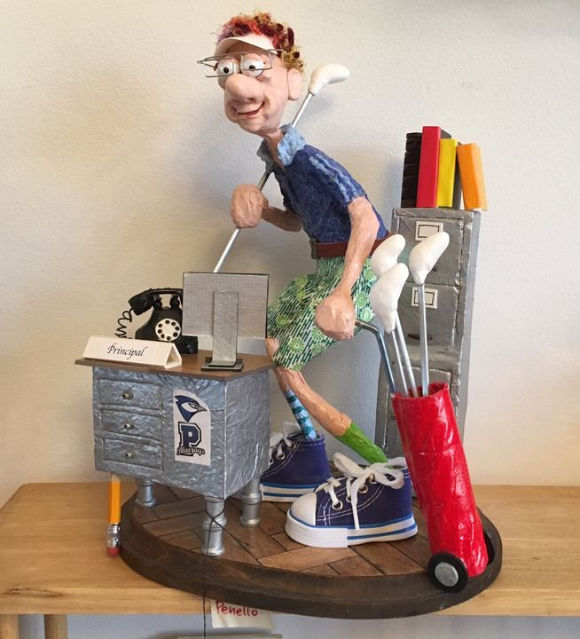
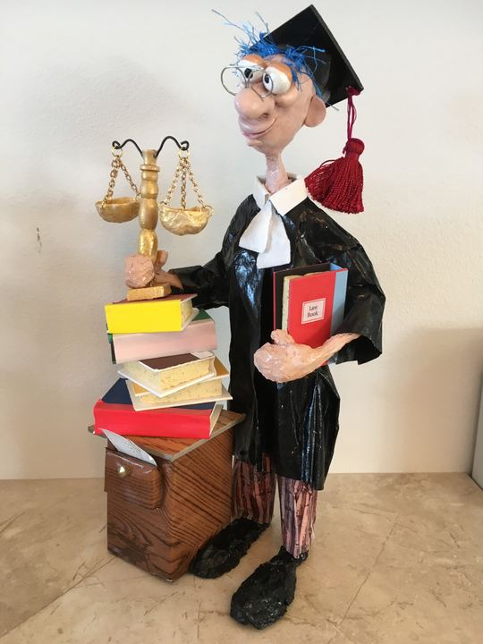
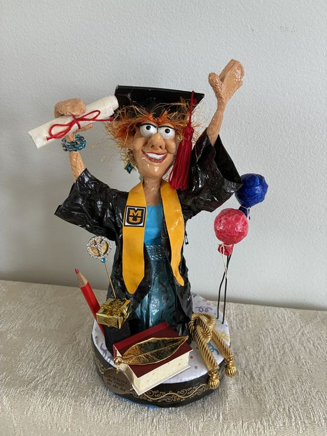

Gallery / Milestones & Special Occasions
Milestones & Special Occasions
Birthdays, graduations, weddings and retirements — personal sculptures for life’s big moments.








3 views
Love one of these? Most pieces are one-of-a-kind, but I’m happy to create something similar just for you.
Ask about a commission